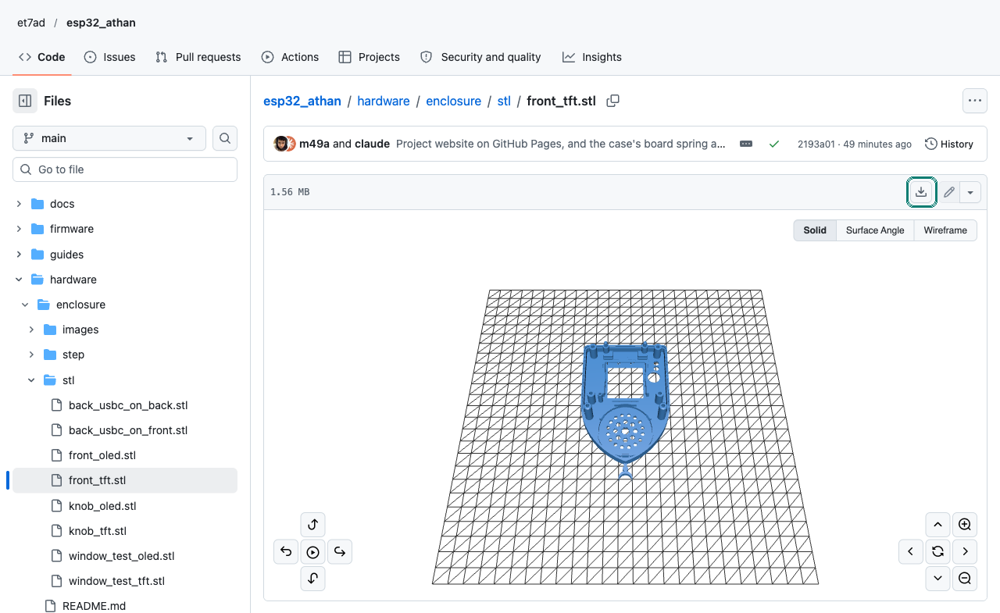
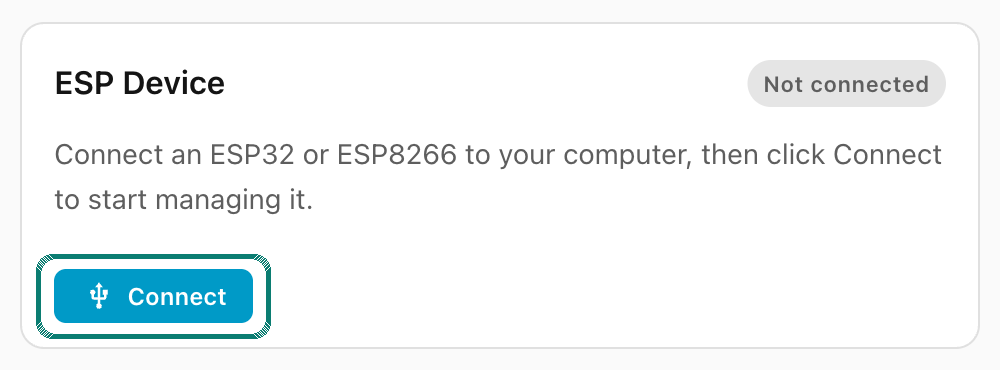

Build a clock
From a breadboard prototype to the finished clock in its printed case. The prototype runs the same firmware, so every part of the clock can be tried before you order a board.
Every file is yours
Everything that makes this clock is in the project on GitHub, free to use, change and share under the MIT license: the firmware, the circuit board, the case, the programmer, the data and the scripts.

Downloading a file from GitHub
Open a folder above, then the file. GitHub shows it (an STL even in 3D, to turn around), and the download button at the top right of the file saves it. On this page, the download links in the case's table do the same in one click.
For everything at once: Code, then Download ZIP, on the project's main page.
1Parts
Every small part on the board is a 1206, a size that is easy to solder by hand, and every part JLCPCB can place has its LCSC number in the schematic. Links go to LCSC for the board's parts, and to a search for the modules sold in many versions.
| Ref | Qty | Part | Side | Buy |
|---|
Quantity 0: fitted only when needed (a different gain, a series resistor, a board used without the case). The design behind each part: the board's design.
2A prototype on a breadboard
An ESP32-S3-DevKitC-1 N16R8 (the same module on a development board), the Adafruit MAX98357A breakout, the speaker, a display and the 5-way switch. It uses the same pins and memory layout as the board. Choose a group to see its wires.
Wire SD through 4.7 kΩ. With GPIO15 high the amplifier plays the left channel, with it low it is off. Left unconnected, the breakout mixes both channels and never switches off.
Flash the DevKitC over either USB port, and read its log on the one marked UART. Other boards that could work, and what they would give up: which chip, and why.
3Building the firmware
The firmware is built with ESPHome 2026.9.1, exactly that version. The easiest way is the script in the repository's root folder (macOS or Linux, Python 3.12 to 3.14): on its first run it installs that ESPHome into its own environment, with no Docker or dashboard.
git clone https://github.com/et7ad/esp32_athan.git
cd esp32_athan
./build_firmware.sh --display tft # or without --display for the OLED| Command | What it does |
|---|---|
./build_firmware.sh | Builds, and writes the factory and update files to firmware/binaries/ |
./build_firmware.sh flash [PORT] | Builds, then flashes over a serial port: the J6 adapter (/dev/cu.usbserial…) or a DevKitC's USB. Without PORT it lists the ports |
./build_firmware.sh ota [HOST] | Builds, then updates a clock over Wi-Fi (athan.local if no host) |
./build_firmware.sh logs [PORT|HOST] | Shows the clock's log |
./build_firmware.sh check | Checks the configuration only, in a few seconds, for both displays |
Before the first build
- Your own encryption key (recommended): generate one and put it in both the
api:andota:sections offirmware/athan.yaml. No Wi-Fi details orsecrets.yamlare needed: Wi-Fi is set up from a phone.
openssl rand -base64 32
- Which display: add
--display tftto any command for the colour screen, or setdisplay_type: tftat the top offirmware/athan.yaml. A clock flashed with the other display's build runs with a dark screen. - Colour screens differ a little. A new one opens on the Wi-Fi setup screen with a teal Wi-Fi icon
and an orange "Press Select". Yellow-green and blue instead, or a white background, means changing the
panel settings at the top of
firmware/displays/tft.yaml. - An older clock on the same network? Version 2 clocks are also called
athan: give one of them anotherdevice_nameat the top of the yaml.
The firmware's files are all in firmware/: athan.yaml (what
the clock does), displays/ (one file per screen), components/athan/ (the C++ part)
and partitions.csv (the memory layout). No need to build it to try it: a release's ready-made file
flashes from the browser (next chapter).
With the ESPHome dashboard instead: copy the contents of firmware/ into its
config folder and use the esphome/esphome:2026.9.1 image. Details:
building the firmware.
4Flashing it
A DevKitC flashes over its USB port: ./build_firmware.sh flash, and it enters download mode by
itself. The board's USB-C only supplies power, so its first flash goes through the 6-pin header J6 with a 3.3 V
USB-serial adapter. That first flash also writes the bootloader and the memory layout; after it, updates go
over Wi-Fi.
Wire the adapter: GND to J6 pin 1, the adapter's RX to pin 4, its TX to pin 5.
Put the jumper cap on J6 pins 1 and 2 (it holds GPIO0 low), then plug the board's USB-C into a charger.
Flash, choosing the adapter's port:
./build_firmware.sh --display tft flash
Remove the jumper, then unplug and replug the USB-C.
Without building: from a release, in your browser
Each release on GitHub carries ready-made firmware files. ESPHome's own page, web.esphome.io, flashes one straight from Chrome or Edge on a computer, with nothing to install.
On the Releases page, download the factory file for your screen:
athan-v3-tft-3.x.y.factory.binfor the colour screen,athan-v3-3.x.y.factory.binfor the OLED.Connect the clock as for any first flash: the USB-serial adapter on J6 with the jumper on pins 1 and 2 (or the press-in programmer), or a DevKitC's USB.
Open web.esphome.io, press Connect, and choose the adapter's port in the list the browser shows.
Choose Install, pick the factory file you downloaded, and install it. When it is done, remove the jumper and power the clock from its USB-C.
The factory file writes the whole memory, so a clock flashed this way starts afresh (Wi-Fi and settings too). A clock that already runs this firmware updates itself instead: the update mark.

Without a header on J6: the press-in programmer
With the colour screen, J6 sits under the display and gets no header. A small board with two ordinary headers drops into J6's holes unsoldered and holds GPIO0 low itself:
- Wire the adapter to its top pins: GND to GND, 3V3 to 3V3, the adapter's RX to TX, its TX to RX.
- Unplug the clock's USB-C, and push the programmer into J6, GND to GND (the square pads), tilted a little so the pins press against the holes.
- Flash as above: the clock powers up from the adapter in download mode. Then take the programmer out and power the clock from its USB-C.
3V3 only, never 5 V, and GND to GND. The programmer's guide.
Later updates
Once the clock is on Wi-Fi: ./build_firmware.sh ota. Clocks also update from this project's
GitHub Releases when their owners install them. ./flash_firmware.sh sends files that already
exist, without building (ota, usb, or usb-full for a blank board).
5The circuit board
59.6 × 50 mm, two layers, every part soldered by hand. The front, the side you look at, carries the display's header, the 5-way switch, the LED, the USB-C and the screw terminals. The back carries the ESP32 module (its antenna at the bottom edge, with no copper under it), the amplifier, the regulator and the small parts.
Ordering
- The files
./generate_fab_files.shinhardware/pcb/makes everything from the saved project without opening KiCad: the Gerbers and drill files, the parts lists, the 3D model, and the BOM and placement files for JLCPCB- The board
- Two layers, 1.6 mm, lead-free HASL or ENIG (ENIG makes the amplifier's small pads easier)
- Assembly
- Suggested: JLCPCB assembles the back only (the module, the amplifier, the USB-C and the small parts), and you solder the front and the through-hole parts
Ordering assembled boards from JLCPCB, step by step. The whole KiCad project, the schematic, the layout and the parts lists are in hardware/pcb/.
Soldering
- The back first: the amplifier (its pad underneath needs hot air or a hot plate), the module, the regulator, the small parts.
- Then the front: the switch, the terminals, the LED and C1 (at most 10.5 mm tall). No barrel jack on a board that goes in the case.
- The display's header: a male header pushed in from the back at DS2 (colour screen) or DS1 (OLED), soldered on the front, its short ends cut off.
The solder jumpers come set for a normal clock: 9 dB gain, the backlight dimmable (JP4), the relay output connected (JP1). Changing the gain.
6The case
Three printed parts shaped like a mihrab. The board clicks into the back, the display into the front, and the front onto the back; as the case closes, the display plugs into the board's header. Drag to turn it, scroll or pinch to zoom, and pull it apart with the slider.
All the case's files are in hardware/enclosure/: the STL files to
print, the STEP files to open in any CAD program (each part, and the whole clock assembled), and
enclosure.py, the CadQuery script that makes them all, to change the case.
| Part | Pick | File |
|---|---|---|
| Front | The display you fit | downloadfront_tft.stl or front_oled.stl |
| Back | The side the USB-C is soldered on (JLCPCB puts it on the back) | downloadback_usbc_on_back.stl or back_usbc_on_front.stl |
| Knob | The one for your front | downloadknob_tft.stl or knob_oled.stl |
| Window test | Optional: a few minutes, to check your display's fit first | downloadwindow_test_tft.stl or window_test_oled.stl |
- PLA or PETG, 0.15 to 0.2 mm layers, 3 walls, 15 to 20 % infill, no supports. The files already lie the way they print.
- PETG suits the back best: the spring that holds the board bends partly across the layers, where PLA is weakest.
- Keep the engraved letters open: set Cura's Initial Layer Horizontal Expansion to −0.1 or −0.2 mm.
Putting it together
The board's header. Push the male header into the board from the back (DS2 for the colour screen, DS1 for the OLED), solder it on the front, cut the short ends flush.
The display's header. Solder the female header onto the display's back. On an OLED, cut its tails to about 1.3 mm.
The front. Lay it on its face. Press the speaker into the clips inside the arch, cone toward the grille, and push the light pipe into the tube by the LED hole.
The display into the front. Slide its board's bottom edge into the two grooved stops, glass toward the face, then press its top end down until the springs click over it.
The board into the back. Slide its bottom edge under the two ledges, then press its top edge down until the spring clicks over it.
Wires. The speaker to J3 (SPK+, SPK−), with the front off. The relay wires come in through the hole in the right side to J5.
The knob. Press it onto the switch's stem, star point up.
Close it. Put the front straight onto the back and press until the rim clicks all round. The long posts and two pins line everything up before the headers meet.
Screws (optional). Six M3 × 16 countersunk, from the back.
To open it, pull the front straight off: the display comes away with it. The case's own guide has how it fits, the numbers, and how to change it.
7First power-on of a new board
Before you plug it in, check +5V and +3V3 against GND with a meter for shorts.
Flash it through J6 (chapter 4).
Read its log on the same adapter (115200 baud). Look for
Athan:in the configuration it prints, andSlot athan: (empty)on a new board../build_firmware.sh logs /dev/cu.usbserial-…
Set up its Wi-Fi. The default sounds download within minutes. Play one from the menu at 10 %, then raise the volume and listen for distortion: that tells you whether to change the gain.
8Acceptance checklist
Run it on the prototype before ordering boards, and again on the first boards. Your ticks stay in this browser.
Every check in full: the acceptance checklist.